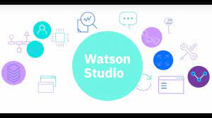
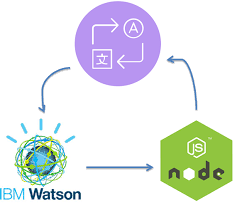

IBMSERVICES
IBM Cloud offers a variety of AI and ML services and tools to help businesses build, train, and deploy machine learning models, as well as utilize AI capabilities .
-

Watson Studio
Watson Studio is an integrated development environment that enables data scientists, developers, and analysts to collaborate and build AI and ML models. It provides tools for data preparation, model building, and model deployment.
-

Watson Machine Learning
This service within Watson Studio allows you to train and deploy machine learning models at scale. It supports popular machine learning frameworks and provides model versioning and monitoring capabilities.
-

Watson AutoAI
Watson AutoAI is designed to automate the process of building machine learning models. It can assist in feature engineering, hyperparameter tuning, and model selection.
-

Watson OpenScale
Watson OpenScale provides tools for monitoring and managing AI and ML models in production. It helps ensure fairness, transparency, and compliance with regulations.
-

Watson Language Translator
This service offers language translation capabilities, supporting multiple languages and dialects. It can be used for content localization and internationalization efforts.
-

Watson Natural Language Understanding
It provides NLP capabilities, including sentiment analysis, entity recognition, and keyword extraction. This service can be used for text analysis and content categorization.
-

IBM Watson Discovery
This service enables organizations to uncover insights from unstructured data, such as documents, articles, and web content, using natural language processing and AI-driven search.
-

IBM Watson Assistant
Watson Assistant helps build chatbots and virtual assistants for enhancing customer support and user interactions.
-

IBM Maximo Visual Inspection
A computer vision service for quality control and defect detection in manufacturing and industrial settings.
-

IBM Watson Knowledge Studio
It allows users to create custom machine learning models for text analytics and entity recognition.
-

IBM Cloud Pak for Data
This is an integrated data and AI platform that provides tools for data preparation, model building, and deployment. It's suitable for end-to-end data science and AI workflows.
-

IBM Watson Speech to Text and Text to Speech
These services convert spoken language into written text and vice versa, supporting a variety of languages and dialects.